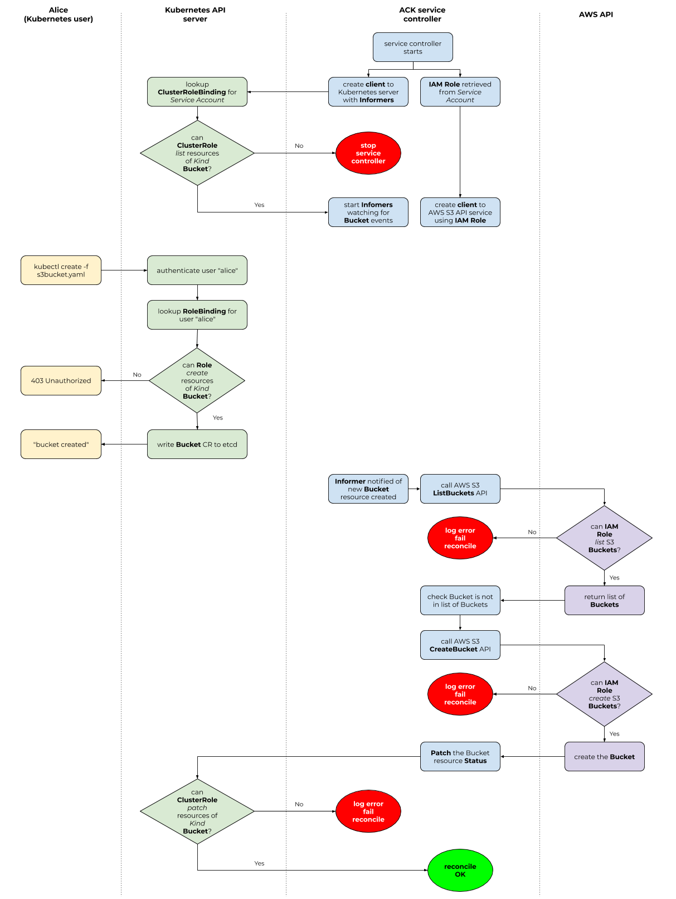

Authorization¶
When we talk about authorization and access control for ACK, we need to discuss two different Role-based Access Control (RBAC) systems.
Remember that Kubernetes RBAC governs a Kubernetes user's ability to read or write Kubernetes resources. In the case of ACK, this means that Kubernetes RBAC system controls the ability of a Kubernetes user to read or write different custom resources (CRs) that ACK service controllers use.
On the other end of the authorization spectrum, you can use AWS Identity and Access Management (IAM) Policies to governs the ability of an AWS IAM Role to read or write certain AWS resources.
IAM is more than RBAC
AWS IAM is more than just an RBAC system. It handles authentication/identification and can be used to build Attribute-based Access Control (ABAC) systems. In this document, however, we're focusing on using IAM primitives to establish an RBAC system.
These two RBAC systems do not overlap. The Kubernetes user that calls the
Kubernetes API via calls to kubectl has no association with an IAM Role.
Instead, it is the Service Account running the ACK service controller's Pod
that is associated with an IAM Role and is thus governed by the IAM RBAC
system.

RBAC authorization mode
The above diagram assumes you are running Kubernetes API server with the RBAC authorization mode enabled.
Configure permissions¶
Because ACK bridges the Kubernetes and AWS APIs, before using ACK service controllers, you will need to do some initial configuration around Kubernetes and AWS Identity and Access Management (IAM) permissions.
Configuring Kubernetes RBAC¶
As part of installation, certain Kubernetes Role resources will be created
that contain permissions to modify the Kubernetes custom resources (CRs) that
the ACK service controller is responsible for.
Important
All Kubernetes CRs managed by an ACK service controller are Namespaced resources; that is, there are no cluster-scoped ACK-managed CRs.
By default, the following Kubernetes Role resources are created when
installing an ACK service controller:
ack.user: aRoleused for reading and mutating namespace-scoped custom resources that the service controller manages.ack.reader: aRoleused for reading namespaced-scoped custom resources that the service controller manages.
When installing a service controller, if the Role already exists (because an
ACK controller for a different AWS service has previously been installed),
permissions to manage CRDs and CRs associated with the installed controller's
AWS service are added to the existing Role.
For example, if you installed the ACK service controller for AWS S3, during
that installation process, the ack-user Role would have been granted
read/write permissions to create CRs with a GroupKind of
s3.services.k8s.aws/Bucket within a specific Kubernetes Namespace.
Likewise the ack-reader Role would have been granted read permissions to
view CRs with a GroupKind of s3.services.k8s.aws.
If you later installed the ACK service controller for AWS SNS, the installation
process would have added permissions to the ack-user Role to read/write CRs
of GroupKind sns.services.k8s.aws/Topic and added permissions to the
ack.user Role to read CRs of GroupKind sns.services.k8s.aws/Topic.
If you would like to use a differently-named Kubernetes Role than the
defaults, you are welcome to do so by modifying the Kubernetes manifests that
are used as part of the installation process.
Once the Kubernetes Role resources have been created, you will want to assign
a specific Kubernetes User to a particular Role. You do this using standard
Kubernetes RoleBinding resource.
For example, assume you want to have the Kubernetes User named "Alice" have
the ability to create, read, delete and modify CRs that ACK service controllers
manage in the Kubernetes "default" Namespace, you would create a
RoleBinding that looked like this:
1 2 3 4 5 6 7 8 9 10 11 12 13 | |
As always, if you are curious whether a particular Kubernetes user can perform
some action on a Kubernetes resource, you can use the kubectl auth can-i
command, like this example shows:
1 | |
Configuring AWS IAM¶
Since ACK service controllers bridge the Kubernetes and AWS API worlds, in addition to configuring Kubernetes RBAC permissions, you will need to ensure that all AWS Identity and Access Management (IAM) roles and permissions have been properly created.
The IAM Role that your ACK service controller runs as will need a different set of IAM Policies depending on which AWS service API the service controller is managing. For instance, the ACK service controller for S3 will need permissions to read and write S3 Buckets.
We include with each service controller a recommended IAM Policy that restricts
the ACK service controller to taking only the actions that the IAM Role needs
to properly manage resources for that specific AWS service API. Within each
service controller's source code directory is a config/iam/recommended-policy-arn
document that contains the AWS Resource Name (ARN) of the recommended managed
policy for that service and can be applied to the IAM Role for the ACK service
controller by calling aws iam attach-role-policy on the contents of that file:
1 2 3 4 5 6 7 | |
Note
Set the $IAM_ROLE variable above to the ARN of the IAM Role the
ACK service controller will run as.
Cross-account resource management¶
TODO